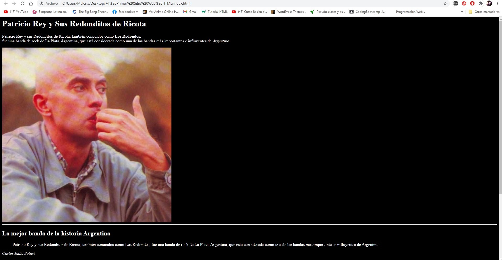
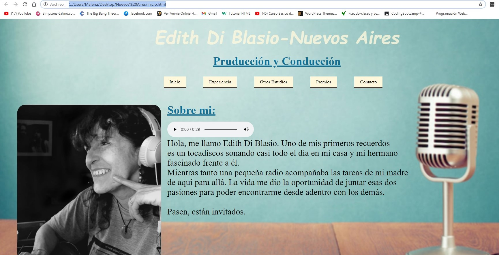

Realizar una página sencilla que resalte algunas partes del texto.
El lenguaje HTML es tan Sencillo, que practicamente se entiende sin estudiar el significado de sus etiquetas principales.
Ademas de textos en Negrita, tambien se pueden poner en Cursiva o Tachados.
Estructurar y marcar el siguiente texto para que el navegador lo muestre con el aspecto de la imagen de ejemplo.
-Texto Original:
Un cuento de Jorge Bucay
Esta es la historia de un hombre al que yo definiría como buscador. Un buscador es alguien que busca. No necesariamente es alguien que encuentra. Tampoco es alguien que sabe lo que está buscando. Es simplemente alguien para quien su vida es una búsqueda.
Un día nuestro Buscador sintió que debía ir hacia la ciudad de Kammir. Él había aprendido a hacer caso riguroso a esas sensaciones que venían de un lugar desconocido de sí mismo, así que dejó todo y partió. Después de dos días de marcha por los polvorientos caminos, divisó Kammir a lo lejos, pero un poco antes de llegar al pueblo, una colina a la derecha del sendero le llamó la atención. Estaba tapizada de un verde maravilloso y había un montón de árboles, pájaros y flores encantadoras. Estaba rodeaba por completo por una especie de valla pequeña de madera lustrada, y una portezuela de bronce lo invitaba a entrar. De pronto sintió que olvidaba el pueblo y sucumbió ante la tentación de descansar por un momento en ese lugar.
El Buscador traspasó el portal y empezó a caminar lentamente entre las piedras blancas que estaban distribuidas como por azar entre los árboles. Dejó que sus ojos, que eran los de un buscador, pasearan por el lugar… y quizá por eso descubrió, sobre una de las piedras, aquella inscripción? Abedul Tare, vivió 8 años, 6 meses, 2 semanas y 3 días? Se sobrecogió un poco al darse cuenta de que esa piedra no era simplemente una piedra. Era una lápida, y sintió pena al pensar que un niño de tan corta edad estaba enterrado en ese lugar?
Mirando a su alrededor, el hombre se dio cuenta de que la piedra de al lado también tenía una inscripción. Al acercarse a leerla, descifró: Lamar Kalib, vivió 5 años, 8 meses y 3 semanas. El buscador se sintió terriblemente conmocionado. Este hermoso lugar era un cementerio y cada piedra una lápida. Todas tenían inscripciones similares: un nombre y el tiempo de vida exacto del muerto, pero lo que lo contactó con el espanto, fue comprobar que, el que más tiempo había vivido, apenas sobrepasaba 11 años. Embargado por un dolor terrible, se sentó y se puso a llorar.
El cuidador del cementerio pasaba por ahí y se acercó, lo miró llorar por un rato en silencio y luego le preguntó si lloraba por algún familiar.
– No, ningún familiar?dijo el buscador
– Pero… ¿qué pasa con este pueblo? ¿Qué cosa tan terrible hay en esta ciudad? ¿Por qué tantos niños muertos enterrados en este lugar? ¿Cuál es la horrible maldición que pesa sobre esta gente, que lo ha obligado a construir un cementerio de niños?
El anciano cuidador sonrió y dijo:
“Puede usted serenarse, no hay tal maldición, lo que pasa es que aquí tenemos una vieja costumbre. Le contaré… Cuando un joven cumple quince años, sus padres le regalan una libreta, como ésta que tengo aquí, colgando del cuello, y es tradición entre nosotros que, a partir de entonces, cada vez que uno disfruta intensamente de algo, abra la libreta y anote en ella: a la izquierda, qué fue lo disfrutado, a la derecha, cuánto tiempo duró ese gozo. ¿Conoció a su novia y se enamoró de ella? ¿Cuánto tiempo duró esa pasión enorme y el placer de conocerla? ¿Una semana, dos? ¿Tres semanas y media? ¿Y después?, la emoción del primer beso, ¿cuánto duró? ¿El minuto y medio del beso? ¿Dos días? ¿Una semana?
¿Y el embarazo o el nacimiento del primer hijo? ¿Y el casamiento de los amigos? ¿Y el viaje más deseado? ¿Y el encuentro con el hermano que vuelve de un país lejano? ¿Cuánto duró el disfrutar de estas situaciones?, ¿horas?, ¿días?
Así vamos anotando en la libreta cada momento, cada gozo, cada sentimiento pleno e intenso… Y cuando alguien se muere, es nuestra costumbre abrir su libreta y sumar el tiempo de lo disfrutado, para escribirlo sobre su tumba. Porque ése es, para nosotros, el único y verdadero tiempo vivido.”
Fin.
Utilizar etiquetas de enlaces, que redirijan a alguna página externa.
-Ejemplo:
Estos son los últimos proyectos en los que estuve trabajando:
Esta página fué la primera que hice para aprender HTML y un poco de CSS,con un fondo básico y una letra estandar, la web cuenta una breve introducción de la mejor banda de Argentina, Patricio Rey y Sus Redonditos De Ricota.
En este segundo proyecto pude incluir más conocimientos de CSS para darle otros estilos, colocar imagenes, links, audios, etc.

Realizar la siguiente lista, con las etiquetas de lista que hemos aprendido.
-Ejemplo:
Realizar un formulario con los campos que considere necesarios:
-Ejemplo: